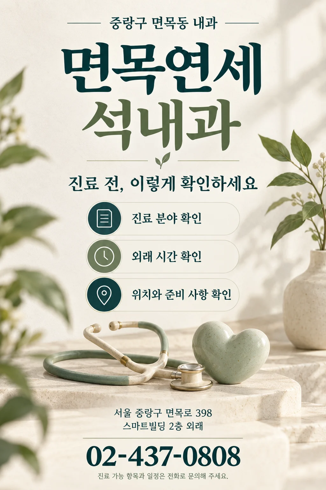

01 · CARE FIELDS
면목동 내과에서 안내하는 진료 분야
면목연세석내과는 서울 중랑구 면목로 398 스마트빌딩에 있습니다. 2층은 외래, 5·6층은 인공신장실로 안내하고 있습니다. 필요한 진료와 검사 가능 여부를 먼저 확인해 주세요.
고혈압·당뇨병·고지혈증
내과클리닉의 만성질환 진료 분야입니다. 기존 진료를 이어가려는 경우 복용 중인 약과 검사 자료를 어떤 형태로 준비할지 병원에 문의하세요.
공식 내과클리닉 안내 ↗일반 내과 진료
소화기·호흡기·내분비 등 내과 진료를 안내합니다. 현재 불편한 증상과 필요한 진료를 전화로 설명하고 접수 가능 시간과 진료 범위를 확인하세요.
진료 분야 자세히 보기 ↗초음파 검사·건강검진
공식 홈페이지에서 초음파 검사와 건강검진을 소개합니다. 검사 항목, 예약 여부, 금식 등 사전 준비가 필요한지는 해당 검사에 맞춰 문의하세요.
공식 초음파클리닉 안내 ↗진료 및 검사 가능 항목은 방문 시점에 따라 달라질 수 있습니다. 실제 이용 조건은 병원에 확인해 주세요.
02 · YOUR DOCTOR
의료진을 확인하세요.
김석형 대표원장 · 내과 전문의
공식 의료진 소개에서 연세대학교 의과대학 의학박사, 대한신장학회 및 세계신장학회(ISN) 정회원 약력을 확인할 수 있습니다.
03 · BEFORE YOU VISIT
처음 방문하기 전, 이렇게 준비하세요.
- 이번 방문에서 상담할 내용 정리
불편한 점, 언제부터 시작됐는지, 기존에 진료받은 내용 등 상담하고 싶은 사항을 간단히 메모해 두세요.
- 필요한 자료는 전화로 먼저 확인
복용 중인 약, 기존 검사 결과나 진료 기록이 있다면 무엇을 가져가야 하는지 문의하세요. 준비 자료는 진료 목적에 따라 달라질 수 있습니다.
- 검사와 접수 마감 확인
진료 종료 시간과 당일 접수 마감은 다를 수 있습니다. 검사 예약 및 준비 사항, 방문할 층과 시간을 함께 확인하세요.
04 · HOURS & LOCATION
중랑구 내과 방문 전, 시간과 위치 확인
| 평일 | 08:30–20:00 |
|---|---|
| 토요일 | 08:30–16:00 |
| 점심시간 | 13:00–14:00 |
| 일요일·공휴일 | 외래 휴진 |
접수 마감, 검사 일정, 투석 일정은 별도 전화 문의가 필요합니다.
스마트빌딩 2층 외래
7호선 면목역 2번 출구 인근
면목본동 주민센터 맞은편
상봉동·망우동 등 인근 지역에서 오시는 경우 지도에 실제 병원 주소를 입력해 경로를 확인하세요. 차량 방문 시 주차 가능 여부는 먼저 문의해 주세요.
네이버 지도에서 위치 확인 ↗05 · QUESTIONS
방문 전 자주 찾는 내용
내과 외래와 인공신장실은 몇 층인가요?
외래는 스마트빌딩 2층, 인공신장실은 5·6층입니다. 처음 방문하실 때는 진료 목적에 맞는 접수 위치를 전화로 확인해 주세요.
토요일에도 내과 진료를 하나요?
공개 안내 기준 토요일 외래시간은 08:30–16:00, 점심시간은 13:00–14:00입니다. 실제 방문일의 진료와 접수 마감은 병원에 확인해 주세요.
검사를 받으려면 금식해야 하나요?
필요한 준비는 검사 종류에 따라 다릅니다. 예약 시 검사 항목과 준비 방법을 병원에 확인하세요. 이 페이지에서는 개인별 검사 준비나 약 복용 방법을 정하지 않습니다.
이 페이지에서 예약할 수 있나요?
이 페이지는 병원 정보와 공식 홈페이지를 연결하는 안내 페이지입니다. 진료 가능 여부와 예약 관련 사항은 02-437-0808로 문의해 주세요.


공식 안내도 함께 확인하세요.
진료·의료진·위치 정보 출처: 면목연세석내과 공식 홈페이지 · 확인일 2026.10.27
방문 준비를 돕는 홍보 안내이며 개인별 진단·처방을 제공하지 않습니다.